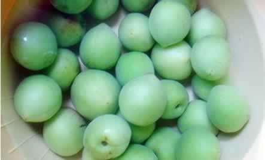
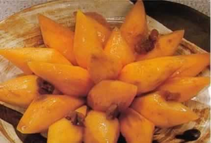

准妈妈的贴心营养小零食
准妈妈在孕中晚期一般都食欲大增，吃些零食是常有的事。可是孕妇到底该吃哪些零食呢？既要满足妈妈们的口福，又要利于宝宝的发育，以下特别挑选10种孕期小零食，让准妈妈在解馋之余，也能为自已和肚子里的宝宝增添营养。
1、奶酪：妈妈们可以每天吃两小片奶酪，奶酪由牛奶浓缩而成，具有丰富的蛋白质、维生素B群、钙和多种有利于准妈妈吸收的微量营养成分。
2、核桃：核桃含有丰富的维生素E、亚麻酸以及磷脂等，尤其是亚麻酸对促进胎儿大脑的发育很重要。每天适可而止，不超过3个核桃为宜。
3、全麦面包：全麦面包能够增加体内的膳食纤维，有便秘问题的准妈妈可以尝试把它作为小零食。
4、葡萄干：能补气血，利水消肿，其含铁量非常高，每天吃几粒还可以预防预期贫血和浮肿。
5、葵瓜子：葵仁的蛋白质含量较高，丰富的铁、锌、钾、镁等元素使葵花子具有防止发生贫血等疾病的作用，建议妈妈们可以每天吃一小把。
6、酸奶：酸奶里面含益生菌，可以帮准妈妈调理肠胃，同时又富含蛋白质，是补充蛋白质很好的来源。而且酸奶清凉、爽口，很容易被消化吸收。
7、西梅：西梅果实营养丰富，富含维生素、矿物质、抗氧化剂及膳食纤维，不含脂肪和胆固醇。西梅含铁也很丰富，铁是构成血红蛋白的原料，能携带血液中的氧分，尤其是对孕妈咪更为重要。其中的膳食纤维能促进肠道蠕动，防止孕妈咪便秘。每日食用3～5枚即可。
8、大枣：不仅自身含有丰富的维生素C，还能给孕妈咪补充铁，但是大枣也不能吃得太多，每天3颗就好，吃多容易引起孕妈咪肠胃胀气。冬季可食用干枣，夏季可食用鲜枣。
9、苹果：苹果不但有酸甜香脆的美味，而且它还有构成胎儿骨骼及牙齿所必需的成分，能防治孕妇的骨质软化症。
10、板栗：板栗含有丰富的蛋白质、脂肪、碳水化合物、钙、磷、铁、锌、多种维生素等营养成分，有健脾养胃、补肾强筋、活血止血的功效。
本周推荐尝试食谱1：
盐腌青梅

推荐理由：准妈妈不妨来试一试自制爽口小零食，盐腌青梅就是不错的选择。
食谱原料：
青梅1斤，盐少许。
制作方法：
1、将买来的青梅洗干净后，过一过沸水再放阴凉地方风干两天。
2、找来密封的玻璃瓶，按一层粗盐一层青梅摆放，最后装满后密封好。
本周推荐尝试食谱2：
蜜烧红薯

推荐理由：红薯含有大量胶原，能祛病强身，促进胎儿的生长发育，防止便秘。
食谱原料：
红心红薯500克，红枣、蜂蜜、冰糖、植物油各适量。
制作方法：
1、红薯洗净，去皮，先切成长方块，再分别削成鸽蛋形；红枣洗净去核，切成碎末。
2、炒锅上火，放油烧热，下红薯炸熟，捞出沥油。
3、炒锅去油置旺火上，加入清水300克，放冰糖熬化，放入过油的红薯，煮至汁粘，加入蜂蜜，撒入红枣末推匀，再煮5分钟，盛入盘内即成。